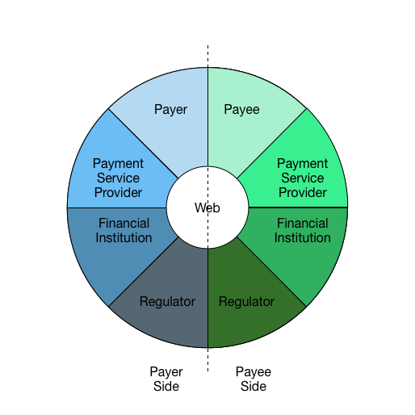
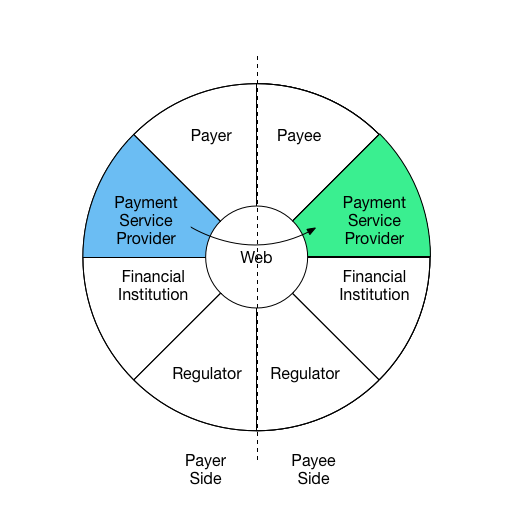

Web Payments Capabilities
Editors:
Patrick Adler, Federal Reserve Bank of Chicago
Adrian Hope-Bailie, Ripple Labs
Ian Jacobs, W3C
Manu Sporny, Digital Bazaar
Contributors:
Patrick Adler, Federal Reserve Bank of Chicago
David Ezell, National Association of Convenience Stores (NACS)
Katie Haritos-Shea, W3C Invited Expert
Jörg Heuer, Deutsche Telekom
Adrian Hope-Bailie, Ripple Labs
Ian Jacobs, W3C
Dave Raggett, W3C
Manu Sporny, Digital Bazaar
Copyright © 2015 W3C® (MIT, ERCIM, Keio, Beihang). W3C liability, trademark and document use rules apply.
Abstract
Payments and the ability to exchange value efficiently and securely over the web are critical to global commerce. Open standards for payments and value exchange help ensure open access and interoperability to financial systems for all the people that use the Web. This document describes a set of capabilities that, if standardized, will improve payments on the Web.
In addition to this document, the Web Payments Interest Group is developing:
- A Vision for Web Payments describes the desirable properties of a Web payments architecture.
- Web Payments Use Cases 1.0 is a prioritized list of Web payments scenarios that the Interest Group expects to address via the capabilities described in this document. The use cases establish a scope of work and a deeper analysis of implied requirements (technical, regulatory, etc.) will inform future standardization work.
- A Roadmap proposes which groups (in or outside of W3C) should take the lead on creating standards for these capabilities.
Status of This Document
This section describes the status of this document at the time of its publication. Other documents may supersede this document. A list of current W3C publications and the latest revision of this technical report can be found in the W3C technical reports index at http://www.w3.org/TR/.
This document is in early draft state and is expected to rapidly evolve based on broad feedback and input from the Web Payments Interest Group.
This document was published by the Web Payments Interest Group as an Editor's Draft. If you wish to make comments regarding this document, please send them to public-webpayments-comments@w3.org (subscribe, archives).
Publication as an Editor's Draft does not imply endorsement by the W3C Membership. This is a draft document and may be updated, replaced or obsoleted by other documents at any time. It is inappropriate to cite this document as other than work in progress.
This document was produced by a group operating under the 5 February 2004 W3C Patent Policy. W3C maintains a public list of any patent disclosures made in connection with the deliverables of the group; that page also includes instructions for disclosing a patent. An individual who has actual knowledge of a patent which the individual believes contains Essential Claim(s) must disclose the information in accordance with section 6 of the W3C Patent Policy.
This document is governed by the 1 August 2014 W3C Process Document.
Table of Contents
- Overview of Capabilities
- Capabilities in Context
- Capabilities in Detail
- Guiding Principles and key considerations
- Glossary
Overview of Capabilities
Capabilities are functionalities necessary to implement payments on the Web. We include capabilities specific to payments but also capabilities that support payments (such as security) and capabilities more broadly related to commerce, as it is important to understand the full context in which payments occur.
We organize capabilities into five groups.
Security Core - These capabilities provide the security foundation for payments.
Capabilities: Key Creation and Management, Cryptographic Signatures, Encryption[a][b][c]
Question: Right now this group has only security capabilities in it. We may wish to have a more general purpose Core set. If so, what would this core set include?
Trust and Identity - Includes features related to establishing trust among parties, and credentialing or authorization of parties involved in a transaction.
Capabilities: Identity[d], Credentials, Rights, Authentication, Authorization, Privacy, Discovery, Registration, Enrollment, and Legal/Regulatory concerns.
Accounts and Settlement - Includes capabilities related to managing stores of value (such as Deposit Accounts) and recorded accounts of ownership (such as Ledger entries, Deeds, etc.) used as part of the settlement of payments or commercial exchanges. Settlement via the Web involves access to the accounts of the participants and ledgers of the account providers and capabilities to manage accounts and capture and monitor transactions in a ledger against those accounts.
Capabilities: Accounts, Ledgers, and Legal/Regulatory concerns related to accounting and recorded ownership.
Payments and Clearing - These are the capabilities that help parties in a transaction establish the mechanics of how the payment will be executed and the directly or indirectly make this happen. This involves the ability to discover and negotiate the mechanism that will be used to execute the payment and agree on the terms including facts such as the costs of making the payment, time between clearing of the payment and settlement into the payee’s account, regulatory requirements and required authorisations.
Capabilities: Funding[e], Payment, Messaging, Clearing, Markets[f], Foreign/Currency Exchange, and Legal/regulatory concerns specific to Payments and Exchange of Value[g][h].
Commerce - Includes capabilities related to commercial and economic interactions.
Capabilities: Offers, Invoicing, Receipts, Loyalty, Rewards, Contracts, Lending, Insurance, Taxation, Legal/Regulatory concerns related to aspects of commercial and economic interactions.
The Interest Group anticipates that these groups will make it easier to define modules that may be reused at a variety of times in a payment transaction, to prioritize capabilities and craft charters for groups to standardize them, and to communicate the group’s plans with other standards bodies and organizations.
Note: Some of these capabilities are expected be useful outside of payment scenarios.
Digital Wallets and Payment Agents
Although the capabilities described in this document may be used and composed in a variety of ways to fulfill payments use cases, the Interest Group anticipates that in many cases, they will be packaged in “payment agents” (or “digital wallets”) that act as a bridge between the merchant, the user, and the user’s account providers.
Capabilities in Context[j]
To simplify and harmonize the descriptions of capabilities necessary for payments and value exchange on the Web, it is helpful to understand the parties involved and the direction that information flows among them at various phases of a payment. We use the following diagram to help illustrate roles and information flow:
[k][l]
Figure: Payment Interaction Wheel
For example, the following diagrams illustrate three interactions in a comment payment scenario.

Interaction 1:
Payee communicates request for payment to
payer and shares payment instructions

Interaction 2:
Payer uses information received from Payee
and creates a new payment request from
Payment Service Provider with stored value.

Interaction 3:
Payer’s Payment Service Provider sends
details to complete payment to Payee’s
Payment Service Provider
The roles illustrated here may be carried out by many different entities. For example, "account provider" may be carried out by financial institutions, mobile operators, tech companies, or cryptocurrency systems; “payee” may be an individual, a business, an NGO, or any entity that can accept a payment.
A payment may involve just two parties (e.g., peer-to-peer) or may be carried out by several collaborating parties. For instance, a payee may use a payment service provider which in turn uses a card network. The actions of these intermediaries may vary, from simply forwarding messages to fulfilling regulatory obligations. Additionally, these interactions may happen in different sequences and direction depending on the payment context.
Capabilities in Detail
Security Core
Key Management
- All participants require an interchangeable mechanism for creation, management, storage and exchange of cryptographic keys
- Key management capabilities are required to
- Securely communicate unique identifiers of payment process participants
- Digitally sign and authenticate information exchanged as part of the payments process (ex. payments, receipts, invoices, etc.)
- Provide reference key for independent elements of the payments process to compose/link transactions and related data across asynchronous segments of the payment process
- Cryptographic Signatures
- Information transferred should be cryptographically signed to ensure
- Authenticity of the participants and ownership of value/asset being transferred or exchanged
- Nonrepudiation of participants intent related to information / communication being exchanged
Key Concepts:
(describe any key concepts/relationship to other capabilities here)
Suggested Deliverables:
- Data model with a concrete syntax for expressing data in the architecture
- Web-based key public key infrastructure data formats and protocols
- New normalization mechanisms for data model serialization (if necessary, for digital signatures)
- Digital signature mechanism for data model
Related Specifications:
- Data models: Graph (RDF), Document/Tree (JSON, XML)
- Syntaxes: XML, JSON, JSON-LD
- Normalization: XML Canonicalization, RDF Dataset Normalization
- Signatures: Linked Data Signatures, Javascript Object Signing and Encryption, XML Digital Signature
Responsible Working Group(s) or Standards Bodies:
- Linked Data Signatures Working Group (W3C)
- JOSE (IETF)
Trust
- Identity
- Entities in the System are able to access Identity information of other parties it is interacting with if specifically required by law, or if consented to by owner of the information
- Identity and credentials of an entity are able to be linked/associated with Accounts and payments to satisfy requirements for Account Providers and Payments Service Providers to comply with KYC/AML requirements.
- Credentials
- Entities in the system are able to be associated with 1 or more credentials. A credential is a qualification, achievement, quality, or piece of information about an entity’s background such as a name, home address, government ID, professional license, or university degree, typically used to indicate suitability. This allows for the exchange of suitable qualities of the entity (ex. over age 21) without divulging sensitive attributes/details about the entity (ex. date of birth)
- Payer is able to exchange standard format credentials with Payee to validate attributes necessary to complete the payment
- Rights
- Authentication
- Participants are able to authenticate the validity of identifiers presented by entities that they are interacting with
- Authorization
- Privacy
- All capabilities in this document should be standardized in a way that minimizes the inclusion/exchange of personal or other sensitive metadata that are part of the payments process unless specifically required by law, or consented to by the owner of the information.
- Discovery
- Payer is able to securely locate public identifier of Payee to be used as part of payment process
- Payee is able to obtain public identifier of Payer participating in payment process
- Payer identifier is persistent across devices
- Registration
- Payer and Payee able to register with Payment Services Provider to obtain credentials used for payments process
- Enrollment
- Payment services provider is able to perform the necessary steps during payer/payee enrollment to collect required identity and credential information about the payer/payee and associate it with an Account.
- Legal/Regulatory concerns related to Trust and Identity
Key Concepts:
TO DISCUSS: Trust Agent???
Suggested Deliverables:
- Data format and vocabularies for expressing cryptographically verifiable credentials
- Protocol to issue credentials to a recipient
- Protocol to store credentials at an arbitrary location as decided by a recipient
- Protocol to request and transmit credentials, given a recipient’s authorization, to a credential consumer
- Protocol to strongly bind an identifier to a real world identity and a cryptographic token (ex: two-factor hardware device)
- Protocol to request and deliver untraceable, short-lived, privacy enhancing credentials.
- Protocol to discover entity’s credential service
Related Specifications:
Identity Credentials (Credentials WG)
- Credentials Vocabulary (Credentials WG)
Responsible Working Group(s) or Standards Bodies:
- Credentials Working Group (W3C)
- Authentication Working Groups (W3C)
Accounts and Settlement
Accounts
Manage Accounts
- Payers and Payees (account owners) require the capability to create accounts at an account provider.
- Payers and Payees require the capability to authorise access to their accounts by third parties such as Payment Services Providers.
- Payers, Payees and other authorised entities require the capability of checking the current balance on an account.
Account Registration/Enrollment at Payments Services Providers
- Payers and Payees are able to register accounts that will be used as part of the payment process with Payment Service Providers of their choice
- Payers and Payees are able to delegate access to specific account functions to Payment Service Providers of their choice
Receive Funds
- Payees are able to receive funds into their accounts
- Send funds
- Payers are able to transfer funds from their accounts
Key Concepts:
(describe any key concepts/relationship to other capabilities here)
Suggested Deliverables:
(include suggested/needed deliverables here)
Responsible Working Group(s) or Standards Bodies:
Related Specifications:
(Insert relevant related existing or in progress standards for capability segment)
Ledgers
Discovery of Ledger services
- Participants require the capability to locate the endpoints at which ledger services are offered by an account provider
- Participants require the capability to discover which services are available against a ledger at an account provider
Capture transactions in ledger
- Participants in the settlement process require the capability to capture a transaction in a ledger transferring value from one account to another on the same ledger.
Monitor a ledger
- Participants in the settlement process require the ability to monitor a ledger for new transactions that impact a specific account.
Reserve funds in an account
- To execute settlement across ledgers a counterparty may require the ability to request that an account provider temporarily reserve funds in an account while settlement is finalised on the other ledger(s).
Key Concepts:
TODO
Suggested Deliverables:
Standardised data model for accounts and ledgers
Standardised interface for account management
Standardised interface for ledger services
Protocol for discovering ledger services
- Protocol for executing settlement between participants on the open Web
Related Specifications:
ISO20022 / X9 specs
Web Commerce Formats and Protocols (Web Payments WG)
Web Payments Vocabulary (Web Payments WG)
Responsible Working Group(s) or Standards Bodies:
Web Settlement Working Group (W3C)
Payments and Clearing
Payment Instrument Discovery and Selection
- Payer and payee are able to discover payment instruments/schemes which they have in common and may be used in the payment process
- Payer is able to establish the different costs of making the payment using the various combinations of payer and payee instruments and schemes (payment methods).
- Payer is able to select payment instrument for use in the payment process
- Payee is able to communicate requirements (or preference) to payer as to whether a specific instrument is accepted and the payment terms for using that instrument.
Payment Initiation
- Payer is able to initiate a payment using selected payment instrument
- Payer is able to identify Payee via:
- Information received via Invoice
- Individual contact information
- Information from past payees
- Payee is able to initiate a request for payment to payee’s designated account provider
- Account provider is able to initiate a payment on behalf of the Payee based on Payee’s requested schedule and frequency (recurring payment)
Payment Authorization
- Payment service provider or payee is able to get authorization from payer to execute payment either in real-time or using a preloaded authorization mechanism
- Payment service provider is able to demonstrate to payer account provider that payment is authorised
Payment Execution
- Payment orchestrator is able to evaluate that all requirements have been met to execute the payment including authorization(s) and compliance checks as required.
- Payment orchestrator is able to instruct all participants to execute the payment and perform any roll-back steps that may be required in case of a failure by any participant to complete the payment.
Payment Acknowledgement
- Payee is able to receive confirmation that payment has been successfully completed
- Payer is able to receive verification that payment has been successfully received
- Account provider is able to receive confirmation that payment is complete
Regulatory/Legal Compliance
- Regulator is able to access/view required payment, payer, and payee details for payments that take place within their jurisdiction
- Regulator is able to intervene in payments meeting or exceeding certain thresholds or criteria in order to comply with jurisdictional laws and requirements
Payment Settlement and Clearing
- Payment service provider is able to provide payer with quotes to settle payee via all payee supported payment schemes
Key Concepts:
TODO: Payment Agent
Suggested Deliverables:
- Protocol for discovering all payment instruments available to a payer.
- User Agent API and REST API for initiating a payment and protocol for routing an invoice to a payment service
- Protocol for authorizing payment via regulatory API
- User Agent API and REST API for completing a payment and protocol for routing payment acknowledgement to payer
Related Specifications:
- ISO20022 / X9 specs
- Web Commerce Formats and Protocols (Web Payments WG)
- Web Commerce User Agent API (Web Payments WG)
- Web Payments Vocabulary (Web Payments WG)
Responsible Working Group(s) or Standards Bodies:
- Web Payments Working Group (W3C)
Commerce
Offers
Generate Offer
- Payee is able to generate a standard format offer which provides information on specific products or services being offered, and additional information on payment instruments accepted, or terms of the offer.
- Payer is able to generate a standard format offer which can be accepted or declined by the payee.
- Payee is able to create scheduled/recurring offers
Receive Offer
- Payer is able to receive offer in machine readable format and use it to initiate payment request
- Payee is able to receive offer in machine readable format and use it to create invoice
Payee is able to able to communicate discounts which may be applied to Offers
Payee is able to receive and apply discount to offer
Payee is able to apply standard loyalty identifiers to offers
Coupons
Payer is able to apply coupons to offers
Payee is able to issue general use coupons
Payee is able to issue coupons specific to payer identifier
Key Concepts:
Suggested Deliverables:
- Data format and vocabularies for expressing offers and coupons
- User Agent API for using an offer to initiate a payment
Related Specifications:
- Web Commerce Formats and Protocols (Web Payments WG)
- Web Commerce User Agent API (Web Payments WG)
- Web Payments Vocabulary (Web Payments WG)
Responsible Working Group(s) or Standards Bodies:
- Web Payments Working Group (W3C)
Invoices
Invoice creation
- Payee is able to generate a standard formatted invoice and communicate to Payer as part of the negotiation of payment terms
Invoice receipt
- Payer is able to receive standard formatted invoice
Invoice data
- Invoice provides payer with Payment instructions for making payment to Payee
- Invoice identifier is returned to Payee via payment process to verify payment is complete
Key Concepts:
Suggested Deliverables:
- Data format and vocabulary for expressing an invoice
- User Agent API for initiating a payment and protocol for routing an invoice to a payment service
Related Specifications:
- Web Commerce Formats and Protocols (Web Payments WG)
- Web Commerce User Agent API (Web Payments WG)
- Web Payments Vocabulary (Web Payments WG)
Responsible Working Group(s) or Standards Bodies:
- Web Payments Working Group (W3C)
Receipts
Create Receipt
- Payee is able to create receipt and communicate receipt to Payer following completion of payment
Receive Receipt
- Payer is able to receive receipt and persist for future use (ex. returns, reimbursement, etc)
Key Concepts:
Suggested Deliverables:
- Data format and vocabulary for expressing a receipt
- Protocol for routing an receipt to a payer’s receipt storage service
Related Specifications:
- Web Commerce Formats and Protocols (Web Payments WG)
- Web Payments Vocabulary (Web Payments WG)
Responsible Working Group(s) or Standards Bodies:
- Web Payments Working Group (W3C)
Loyalty
- Payer is able to register with Payee’s loyalty program by requesting loyalty identifier from Payee.
- Payee can “opt-in” to loyalty program by providing program specific public identifier
Key Concepts:
Suggested Deliverables:
- Same as “Trust” deliverables
Related Specifications:
Identity Credentials (Credentials WG)
- Credentials Vocabulary (Credentials WG)
- Web Commerce Vocabulary (Credentials WG)
Responsible Working Group(s) or Standards Bodies:
- Credentials Working Group (W3C)
Guiding principles and key considerations
Due to the breadth of the capabilities that will require standardization, it is important to outline certain guiding principles which are expected to be incorporated across each of the defined
capabilities in this document as they are undertaken by standards teams. The principles include:
Extensibility
- Because the Web payments architecture will accommodate a great variety of payment schemes (existing and new), we expect to future standards to support interoperability on a minimal set of features and also support scheme-specific extensions. Therefore, data formats must be easily extensible.
Composability
- Different parties will want to add information to messages that are forwarded.
Identifiers
- Payment schemes define identifier syntax and semantics (e.g., primary account numbers (PANs) for credit cards, or bitcoin account identifiers). We expect to support scheme-specific identifiers. But where global identifiers are required and are not scheme specific, we expect to use URIs.
- Due to the nature of payments and the fundamental challenge of preventing “double-spending” as part of the payments process, it is important that every actor/system be uniquely identifiable to other actors and systems participating in the payments process. While each actor must be identifiable, a number of use cases that need to be addressed include low value or less-sensitive payments which do not require the knowledge of a participant’s identity as a part of the transaction. Because of this, it is important to de-couple the identification (non-identity based unique ID) of each participant in the Architecture from the Identity data (sensitive/private data about the participant) which describes information about a participant taking part in the system
Security
- Messages must not be altered in transit, but may be included as part of encapsulating messages created by intermediaries.
- It must be possible to provide read-only access to transaction information to third parties (with user consent).
- Signatures must be non-forgeable.
Identity, Privacy, and Consumer Protection
- To satisfy regulatory requirements and financial industry expectations, some use cases will require strong assurances of connections between a Web identity and a real-world identity.
- At the same time, any source of information that can lead to the unintended disclosure or leakage of a user’s identity (or purchasing habits) is likely protected in a jurisdiction somewhere in the world by a legal/regulatory entity having responsibility for its citizens.
- For discussion: the role of per-transaction pseudo-anonymous identity mechanisms for some use cases. These mechanisms would make it much more difficult for an unauthorized party to track a user’s purchasing habits from 1 transaction to another transaction. This will also eliminate the loss of that identity from affecting other services that user is enrolled in.
- Regulations in several jurisdictions require the consumer to be notified every time their personal information/credentials are accessed. To discuss: cryptography requiring a user’s input/knowledge to open that information.
- Some purchases in combination (e.g., products accommodating prenatal care needs) will leak sensitive information. To discuss: dynamic key construction can be applied to each line item in a receipt to help prevent unauthorized data mining of individuals, legal & regulatory snooping. Even if the protected information is stolen or accidentally forwarded to unauthorized parties they will not have the correct tokenized inputs to recreate the dynamic keys to unlock access to the protected information.
- Role based access controls when applied to dynamic key construction for each individual credential or large sets of data will help facilitate interoperable access without needless duplication and encryption of information for each authorized party. For discussion: Use dynamic keys to protect a static key where various dynamic keys can be used to unlock the static key that protects the sensitive content.
- The system should support privacy by requiring only the minimal amount of information necessary to carry out a transaction. Additional considerations (e.g., marketing initiatives with user consent, or legal requirements) may lead to additional information exchange beyond the minimum required.
- Payment account providers must take measures to ensure that account identifiers are not, on their own, sufficient to identify the account holder.
- Another suggestion: “Don’t require personal authentication, but make sure it can be done properly”
Legal and Regulatory
- In some jurisdictions legal or regulatory entities may need to be granted “time-limited access” to a transaction to view specific credentials and purchased items of the user. The system should limit what is viewed to the minimum necessary. Examples: Government subsidies such as food stamps, controlled substances. In these cases those particular line items in the receipt may be required to be viewable via individuals or computers charged with the responsibility to prevent abuse of those programs (e.g., unauthorized reselling). There may also be a requirement to view identities or credentials.
- For certain classes of payments, such as high value or international, it must be possible to provide role-based access controls to pierce a pseudo-anonymous identity mechanism so the transaction can be counter signed by a legal, regulatory, or KYC/AML system yet safeguard against disclosing unnecessary information. It must be infeasible for the piercing of this mechanisms to leak enough information for those authorities to forge user information.
Accessibility
- Web payment schemas, interfaces, data and the architectures that enable them need to be made accessible for people with disabilities. Web APIs and applications must be developed and implemented with accessibility-in-mind and allow for accessibility features. If not, developers, payees, providers and retailers may be in violation of disability laws.
Glossary
The following terms are used throughout this document.
Payer
The payer provides a source of funds as required by a payment.
Payee
The payee receives funds as required by a payment.
Account Provider
At its core, a payment is a transfer of value from one account to another. An account is a store of value with a balance and a history of debits and credits that affect that balance. The account provider is responsible for managing and controlling access to one or more accounts on behalf of the account owner (usually a payer or payee). Account owners access their accounts through payment instruments[o]. The rules that govern usage of a payment instrument constitute a payment scheme[p]. An account’s value is represented as a series of deposits (credits) and withdrawals (debits) and is recorded in a ledger maintained by the account provider.
Account Owner
An account owner is the entity with the legal right of ownership of any asset in an account provided to them by an account provider. The account owner may directly or indirectly transfer some or all of this asset out of the account or take ownership of additional assets in the account as a result of a completed payment and settlement process.
Payment Services Provider
The payment services provider provides services to the payer and/or payee to facilitate a payment.
Payment Orchestrator
The payment orchestrator is the entity or entities (payer, payee or payment service provider) that are orchestrating the steps required to complete the payment flow.[q][r][s][t][u]
Regulator
The regulator is responsible for monitoring some payments activities and enforcing legal requirements. The payment flow may be interrupted and the payment aborted or cancelled if the regulator does not approve the conditions of payment.
Settlement Service
Settlement is the process of discharging any obligations that exist between parties to a payment. This process involves the final and irrevocable movement of value between the accounts of the payer and payee and any counterparties to the transaction through the capture of debits and credits in the ledgers upon which the accounts are recorded.
Today the provision of settlement services is reserved for centralised entities such as central banks or in the case of cross-border payments a combination of central and correspondent banks however it is technically feasible that settlement services could be provided by any entity in a Web payments architecture.
Note: @@The Web Payments Glossary@@ defines additional terms and relates this group’s definitions to those from related standards.
[a]All of these have to do with Trust.
[b]We may want to consider merging Core into Trust. Extensible Data Model is the only one that doesn't quite fit, and we could probably shoe-horn that into "Payments and Exchange"
[c]I wouldn't oppose the data model standing on it's own. "Extensible Data Model" feels like a requirement or feature not a capability.
[d]Is this identity or identifier?
[f]This feels out of scope
[g]Are we trying to go beyond the scope of payments? I would warn against this. Just because what we are working on MAY have applicability to other forms of value exchange we shouldn't be tempted to creep the scope too far.
[h]The exchange of value really reflects more of the need to be able to use value mechanisms such as "points" or "store credit" as part of the payment mechanism. Markets were added when considering capabilities such as currency conversion that would likely have to be considered for cross border payments where the payer/payee would like to be or be paid in different currencies.
[i]Suggest this be updated based on changes above.
[j]While I sort of like the diagrams, I'm not yet sure what purpose this section fulfills
[k]Replace "Financial Institution" with "Account Provider"
[l]Great suggestion... will update..
[m]With this organization it is no longer detectable what is version 1 and what is next.
[n]This feels to me like it will be the biggest discussion point at the F2F. Capability prioritization
[q]I don't have a clear idea of what a 'payment orchestrator' does. Is it a piece of software? Is it a person? Isn't there more than one involved in a transaction? For example, doesn't a transaction involve orchestration steps by both the payer and PSP?
[r]It's a role. All protocls have an element of orchestration which is often based on the rules of the protocol. (On the Web the client normally orchestrates everything as the protocol is stateless). Each participant knows when to do what based on the protocol rules. We have the possibility of numerous participants possibly taking on this role and use cases that will follow different flows and use different protocols. A payer may orchestrate an entire transaction with no input from the payment services provider entity or the orchestration may be shared by all parties. At the current level of abstraction all we can say is that there will need to be some level of orchestration and we can't assign that responsibility to any other role because it may be the responsibility of one or many different participants in different use cases.
[s](I still am not sure what this means.)
[t]In any payment flow some entity is coordinating the steps and communication. Depending on the use case that entity may be the payer. payee or some other participant (we don't have a nice clean client server model). Since we can't assign that responsibility to a single entity we need to define a role with that responsibility which can be taken on by any participant.
[u]We only use this term in two sentences in the entire document - still questioning whether it's necessary.